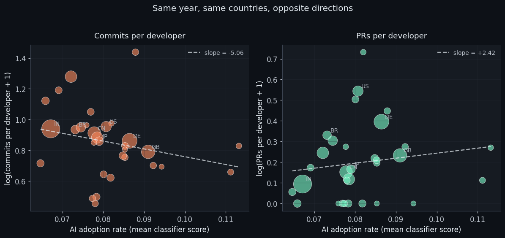
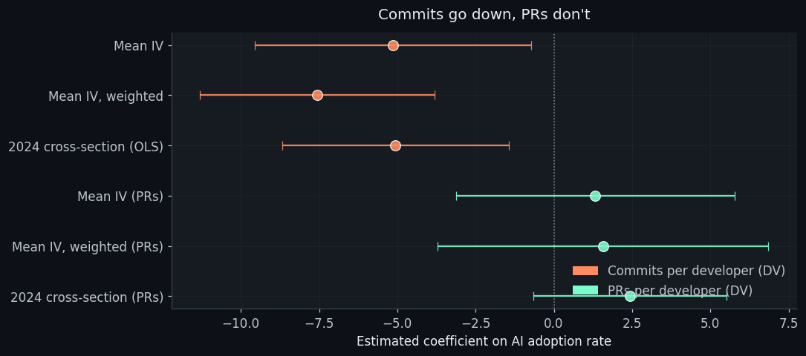

Loaded 4,824 scored accounts across 46 countries
2024 cross-section: 31 countries with >=15 scored accounts and >=5 panel devsI’m continuing my resolution to share more unfinished work, so here’s a finding from a project I’m still in the middle of.
A few weeks ago I built a classifier to detect AI coding tool users from public GitHub commit history. The idea was simple: if AI tools change how developers code (commit cadence, message length, structural patterns), those changes should be detectable from public artefacts. The classifier hit AUC 0.94 and generalised across tools — it was trained on Claude Code adopters and still scored Aider users at a mean predicted probability of 0.73.
So I had a way to measure AI adoption at scale, without surveys or vendor telemetry. I pointed it at 4,824 GitHub accounts spread across 53 countries to ask the follow-up question:
Do countries with higher AI adoption rates show higher developer productivity?
The honest answer turned out to be more interesting than I expected. It depends entirely on which productivity metric you pick. And that, I think, is the actual finding.
The classifier, briefly
The classifier is trained on 276 GitHub accounts: 74 confirmed AI adopters(identified by CLAUDE.md files in their repos or Co-Authored-By: Claudetrailers in their commit history) and 202 controls (accounts with active commithistories before and after late 2023, with zero AI markers). It uses 43behavioural features — commit cadence, message length and structure, PR bodypatterns, inter-commit timing — and explicitly excludes anything that wouldlet it cheat by matching the labelling artefacts.Random Forest, 5-fold cross-validation, AUC 0.94. Strip out all the message-contentfeatures and it still hits 0.91 on activity patterns alone. Test it on Aider users— a tool it was never trained on — and they score a mean predicted probability of0.73 vs 0.03 for controls. So whatever it’s detecting, it’s not Claude-specificstylistic quirks. It’s a general “this developer’s behaviour looks AI-assisted”signal.If you want the methodology in detail, the paper is here.For the rest of this post I’ll just treat the classifier as a black box that givesme a probability per account, and we’ll talk about what those probabilities tell us.
The country-level puzzle
With per-account AI scores in hand, the obvious next move is to aggregate them up. Take the 4,824 scored accounts, group them by country, take the mean classifier score per country, and you get an “AI adoption rate” for each country. This is the country-level independent variable.
For the dependent variable, I have a panel of GitHub Archive data from 2022–2024 giving me, per country per quarter, the number of commits per active developer and the number of pull requests per active developer. These are the two natural output measures.
Both metrics tell you about developer activity. Both are normalised per developer to control for ecosystem size. Both are commonly used in the empirical productivity literature on software development. If AI tools are increasing developer productivity, you’d expect both to go up in countries with higher AI adoption.
What I actually found is that they go in opposite directions.
The plot that started this post

On the left: commits per developer in 2024, plotted against the country’s mean AI adoption rate. Higher AI adoption, lower commits. The slope is negative, the dashed line tilts down.
On the right: pull requests per developer, same countries, same year. The slope is slightly positive. Statistically indistinguishable from zero, but definitely not negative.
Same developers. Same year. Same AI adoption measure. Two reasonable productivity metrics, going in opposite directions.
This isn’t an artefact of one weird specification. I ran the regression with country and year fixed effects, weighted by the number of developers, with and without a pre-period control, swapping the IV for a threshold-based version (fraction of accounts scoring above 0.5) and a median version, and as a clean 2024 OLS cross-section. The commits result keeps coming back negative (coefficients between −5 and −8 across specifications). The PR result keeps coming back as a precise null (coefficient around +1, standard error around 4).

Three readings of the same data
You can tell at least three stories here. I find one of them most plausible, but the data don’t let me prove any of them, so let me lay them out and you can make your own choice.
1. AI tools change the shape of commits, not the amount of work
This is the reading I find most compelling. AI coding assistants change how developers commit, not how much they ship. They encourage workflows where you work conversationally with the tool through a longer session, then commit the result as a single coherent change. Squash-merge habits get reinforced. Each commit covers more ground, has a longer and more structured message, and represents more of what would previously have been three or four separate “wip” commits.
If that’s true, then commits per developer isn’t a productivity metric. It’s a commit granularity metric in disguise. Countries where AI adoption is higher ship the same amount of code, but in fewer, larger commits. The negative coefficient on commits is a real behavioural shift that has nothing to do with output going down.
The PR per developer null is consistent with this: PR cadence is driven by feature scope, not commit cadence. If you’re shipping the same features but in fewer commits, your PR rate doesn’t change.
This story is also consistent with what the classifier itself was trained to detect — longer, more structured commit messages. The thing that makes a developer “look AI-adopted” to the model is the same thing that drives the commits-per-developer coefficient negative. Mechanism and measurement are plausibly aligned.
2. The classifier is picking up something other than AI adoption
This one I worry about. A pre-period placebo test on the training data showed that 6 of 8 features differ significantly between confirmed AI adopters and controls before AI tools existed in their current form. The classifier captures some combination of “uses AI tools” and “is the kind of careful, conscientious developer who would later go on to use AI tools.” Sample selection.
If countries differ in their proportion of careful-vs-fast developers, the classifier-derived adoption rate is partly measuring that. And careful developers might commit less frequently per unit of work for reasons that have nothing to do with AI. The negative coefficient on commits might just be reflecting the distribution of developer styles across countries.
I tried to address this with a baseline pre-period control in the regression. It didn’t help — the control is fully absorbed by the country fixed effects, so it contributes no useful variation. So this confound remains genuinely possible.
3. AI tools really do slow individual commits down
There’s a recent randomised trial by METR on experienced open-source developers working on mature codebases. They expected AI tools to speed them up by ~24%. The actual measured effect was a 19% slowdown. The authors’ analysis of screen recordings suggested the tax came from prompt formulation, output review, and context-loading on complex codebases.
If that mechanism applies more broadly, then in countries with higher AI adoption, individual commits genuinely take longer (more time per commit reviewing AI output) without changing what gets shipped overall. PR cadence is unaffected because PRs aggregate over multiple commits. Commits per developer goes down because each commit is more expensive in developer time.
This is a less appealing story for me than the granularity one — the METR finding is on a specific population (experienced devs, mature codebases) and the cleaner experimental literature (Peng et al., Demirer et al.) finds substantial speedups in more representative samples. But it’s a story the data is consistent with, and it would be intellectually dishonest to dismiss it.
What I think this means for the literature
There’s a growing body of empirical work on AI tool adoption and developer productivity. Most of it uses commit-based outcomes — count of commits, code churn, things you can extract from git logs. If the granularity story is right, that’s a problem. A negative coefficient on commits per developer in your panel might be telling you that your treated developers got more efficient, not less, and you’re measuring the wrong thing.
I don’t think this invalidates the existing findings. The randomised experiments that measure task completion time are largely robust to this — they’re not counting commits, they’re counting whether the task got done. The observational studies that use commit counts are more exposed.
If you’re designing a future study in this space, I’d suggest:
- Use task-level outcomes if you can get them. PR merge rate, build success rate, feature ship time. These are downstream of commit cadence.
- If you must use commit-based outcomes, report PR-based ones alongside as a diagnostic. If they diverge in sign, you’re probably looking at a granularity shift.
- Treat lines-changed and code volume metrics with the same suspicion. AI may encourage longer, more deliberate commits — those will look like more code per commit even if the underlying output is the same.
For my paper version of this analysis (which I’m writing alongside this post), I’m reporting the commits/PRs split as the central robustness finding and being explicit that the granularity hypothesis is a plausible reading of the divergence, not a proven mechanism.
Where I’m less sure
A handful of things that should temper the confidence with which this is read:- The 2024 cross-section is thin. 31 countries, with AI adoption rates ranging from about 6% to 11%. That’s not a lot of identifying variation, and a permutation placebo says the negative commits coefficient sits at the 15th percentile of the random-shuffle null. Not exonerated, but not a smoking gun either.- The IV is structurally a 2024 cross-section. The panel framing (country and year fixed effects) is honest about this — there’s no within-country variation in adoption before 2024 in my measure. The “panel regression” identifies off cross-country differences in 2024.- The classifier-as-IV inherits the conscientiousness confound. I can’t fully separate “this country has more AI adopters” from “this country has more developers whose behaviour looks the way AI adopters’ behaviour looks.”- GitHub Archive samples are noisy. Median country-year cell has 2 located developers. Most of my measurement noise lives here.- The classifier is single-tool trained. Generalises to Aider, but doesn’t necessarily catch users of inline-only Copilot or other tools that leave less of a behavioural fingerprint.The right move for me now is two-fold. I’m writing up the formal paper version(more careful, more caveated, robustness battery in tables), which will liveover here when it’s done. And I’m thinking aboutwhat a follow-up study would look like with cleaner identification — probablyexploiting the staggered availability of specific tools by country, withtask-level outcomes from CI build data rather than commit counts.If you have a take on the granularity hypothesis, or you’ve seen this patternin your own data, I’d love to hear it. The repo for the analysis ishere on GitHub.—Thanks to Avery for doing most of the actual work on this — including the painful bits like the rate-limit retry-trap diagnosis and the 14-spec robustness battery.